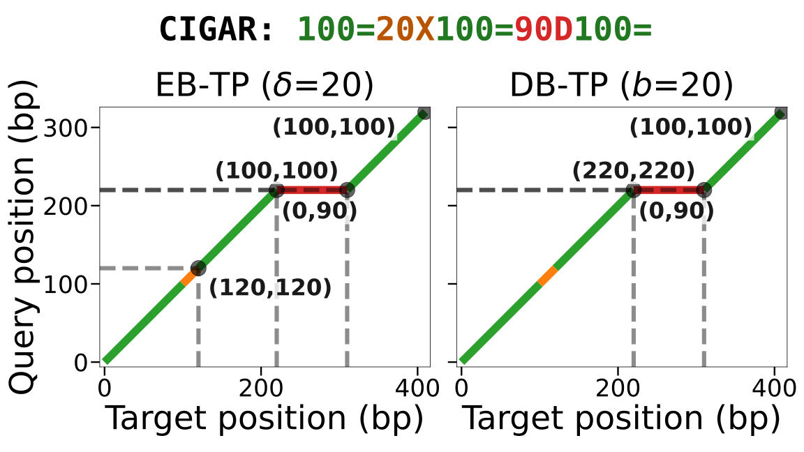
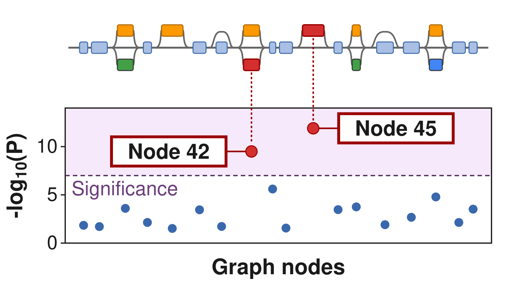
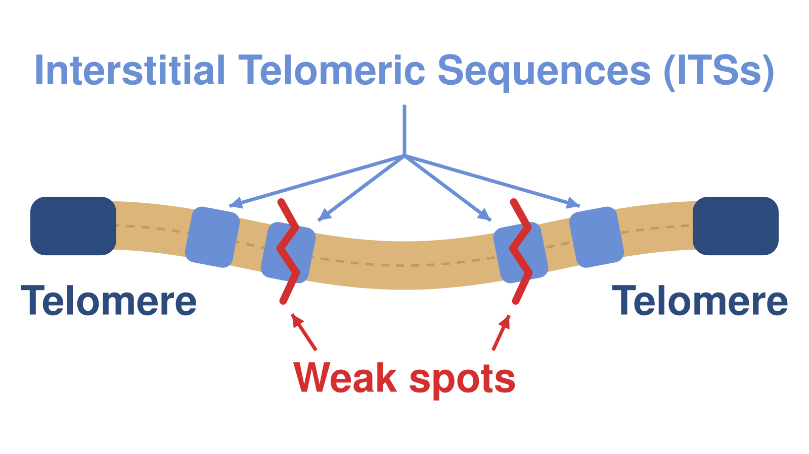

Pangenome×Representation
We represent pangenomes implicitly, without building a graph. Tracepoints compress alignments, and impg queries them to build graphs on demand. These approaches make population-scale analysis accessible.
We build and analyze pangenomes to study genome variation, cancer, and complex disease.
We span the full pangenomics stack, from pangenome×representation, with implicit alignments and graphs you can query, to pangenome×association, with graph-based markers. We apply our tools to pangenome×fragility, cancer×pangenomics, and complex disease.

We represent pangenomes implicitly, without building a graph. Tracepoints compress alignments, and impg queries them to build graphs on demand. These approaches make population-scale analysis accessible.

We leverage pangenomes for genome-wide association studies, finding trait associations with structural variants absent from linear references. Our methods use graph features, not variant calls, as genetic markers.

We study hidden telomere repeats in the human pangenome, weak spots where DNA can break. In glioblastoma, we read each DNA molecule on its own to find markers of unstable tumors and track their evolution.
We construct personalized pangenomes from tumor and matched normal samples using long-read sequencing and de novo assembly. This approach reveals somatic structural variation that single-reference approaches miss.
The lab opened in January 2026. We are actively building the team.
Full list on Google Scholar or ORCID.